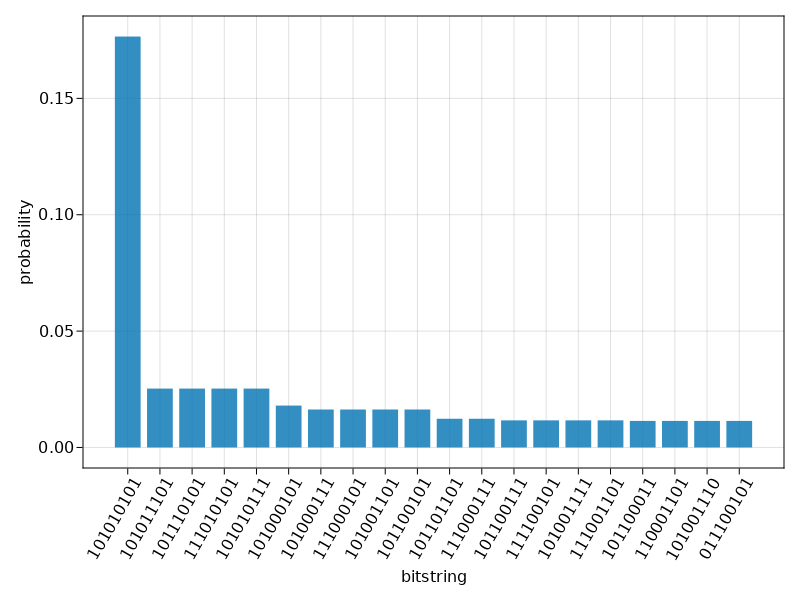

using EaRyd
using CairoMakie
using EaRydPlotsIn this example, we examine the adiabatic preparation of a spin Hamiltonian.
We first prepare the adiabatic pulse sequence as two piecewise linear functions define the rabi waveform
Ω_max = 2.3 * 2 * pi
Ω = piecewise_linear(clocks=[0.0, 0.252, 1.052, 1.6], values=[0.0, Ω_max , Ω_max , 0]) ⠀⠀⠀⠀⠀⠀⠀⠀⠀⠀⠀Waveform{_, Float64}⠀⠀⠀⠀⠀⠀⠀⠀⠀⠀⠀
┌────────────────────────────────────────┐
20 │⠀⠀⠀⠀⠀⠀⠀⠀⠀⠀⠀⠀⠀⠀⠀⠀⠀⠀⠀⠀⠀⠀⠀⠀⠀⠀⠀⠀⠀⠀⠀⠀⠀⠀⠀⠀⠀⠀⠀⠀│
│⠀⠀⠀⠀⠀⠀⠀⠀⠀⠀⠀⠀⠀⠀⠀⠀⠀⠀⠀⠀⠀⠀⠀⠀⠀⠀⠀⠀⠀⠀⠀⠀⠀⠀⠀⠀⠀⠀⠀⠀│
│⠀⠀⠀⠀⠀⠀⠀⠀⠀⠀⠀⠀⠀⠀⠀⠀⠀⠀⠀⠀⠀⠀⠀⠀⠀⠀⠀⠀⠀⠀⠀⠀⠀⠀⠀⠀⠀⠀⠀⠀│
│⠀⠀⠀⠀⠀⠀⠀⠀⠀⠀⠀⠀⠀⠀⠀⠀⠀⠀⠀⠀⠀⠀⠀⠀⠀⠀⠀⠀⠀⠀⠀⠀⠀⠀⠀⠀⠀⠀⠀⠀│
│⠀⠀⠀⠀⢰⠉⠉⠉⠉⠉⠉⠉⠉⠉⠉⠉⠉⠉⠉⠉⠉⢧⠀⠀⠀⠀⠀⠀⠀⠀⠀⠀⠀⠀⠀⠀⠀⠀⠀⠀│
│⠀⠀⠀⠀⡞⠀⠀⠀⠀⠀⠀⠀⠀⠀⠀⠀⠀⠀⠀⠀⠀⠈⢧⠀⠀⠀⠀⠀⠀⠀⠀⠀⠀⠀⠀⠀⠀⠀⠀⠀│
│⠀⠀⠀⢰⠃⠀⠀⠀⠀⠀⠀⠀⠀⠀⠀⠀⠀⠀⠀⠀⠀⠀⠈⢧⠀⠀⠀⠀⠀⠀⠀⠀⠀⠀⠀⠀⠀⠀⠀⠀│
value (rad/µs) │⠀⠀⠀⡜⠀⠀⠀⠀⠀⠀⠀⠀⠀⠀⠀⠀⠀⠀⠀⠀⠀⠀⠀⠈⢧⠀⠀⠀⠀⠀⠀⠀⠀⠀⠀⠀⠀⠀⠀⠀│
│⠀⠀⢠⠇⠀⠀⠀⠀⠀⠀⠀⠀⠀⠀⠀⠀⠀⠀⠀⠀⠀⠀⠀⠀⠈⢧⠀⠀⠀⠀⠀⠀⠀⠀⠀⠀⠀⠀⠀⠀│
│⠀⠀⡼⠀⠀⠀⠀⠀⠀⠀⠀⠀⠀⠀⠀⠀⠀⠀⠀⠀⠀⠀⠀⠀⠀⠈⢧⠀⠀⠀⠀⠀⠀⠀⠀⠀⠀⠀⠀⠀│
│⠀⢠⠇⠀⠀⠀⠀⠀⠀⠀⠀⠀⠀⠀⠀⠀⠀⠀⠀⠀⠀⠀⠀⠀⠀⠀⠈⢧⠀⠀⠀⠀⠀⠀⠀⠀⠀⠀⠀⠀│
│⠀⣸⠀⠀⠀⠀⠀⠀⠀⠀⠀⠀⠀⠀⠀⠀⠀⠀⠀⠀⠀⠀⠀⠀⠀⠀⠀⠈⢧⠀⠀⠀⠀⠀⠀⠀⠀⠀⠀⠀│
│⢀⡇⠀⠀⠀⠀⠀⠀⠀⠀⠀⠀⠀⠀⠀⠀⠀⠀⠀⠀⠀⠀⠀⠀⠀⠀⠀⠀⠈⢧⠀⠀⠀⠀⠀⠀⠀⠀⠀⠀│
│⣸⠀⠀⠀⠀⠀⠀⠀⠀⠀⠀⠀⠀⠀⠀⠀⠀⠀⠀⠀⠀⠀⠀⠀⠀⠀⠀⠀⠀⠈⢣⠀⠀⠀⠀⠀⠀⠀⠀⠀│
0 │⡇⠀⠀⠀⠀⠀⠀⠀⠀⠀⠀⠀⠀⠀⠀⠀⠀⠀⠀⠀⠀⠀⠀⠀⠀⠀⠀⠀⠀⠀⠀⢣⠀⠀⠀⠀⠀⠀⠀⠀│
└────────────────────────────────────────┘
⠀0⠀⠀⠀⠀⠀⠀⠀⠀⠀⠀⠀⠀⠀clock (μs)⠀⠀⠀⠀⠀⠀⠀⠀⠀⠀⠀⠀⠀⠀⠀2⠀ define the detuning waveform
U = Ω_max / 2.3
Δ = piecewise_linear(clocks=[0.0, 0.252, 1.052, 1.6], values=[-6*U, -6*U, 2*U , 2*U]) ⠀⠀⠀⠀⠀⠀⠀⠀⠀⠀⠀Waveform{_, Float64}⠀⠀⠀⠀⠀⠀⠀⠀⠀⠀⠀
┌────────────────────────────────────────┐
20 │⠀⠀⠀⠀⠀⠀⠀⠀⠀⠀⠀⠀⠀⠀⠀⠀⠀⠀⠀⠀⠀⠀⠀⠀⠀⠀⠀⠀⠀⠀⠀⠀⠀⠀⠀⠀⠀⠀⠀⠀│
│⠀⠀⠀⠀⠀⠀⠀⠀⠀⠀⠀⠀⠀⠀⠀⠀⠀⠀⠀⠀⢀⣀⣀⣀⣀⣀⣀⣀⣀⣀⣀⣀⠀⠀⠀⠀⠀⠀⠀⠀│
│⠀⠀⠀⠀⠀⠀⠀⠀⠀⠀⠀⠀⠀⠀⠀⠀⠀⠀⠀⢠⠞⠀⠀⠀⠀⠀⠀⠀⠀⠀⠀⠀⠀⠀⠀⠀⠀⠀⠀⠀│
│⠀⠀⠀⠀⠀⠀⠀⠀⠀⠀⠀⠀⠀⠀⠀⠀⠀⠀⣰⠋⠀⠀⠀⠀⠀⠀⠀⠀⠀⠀⠀⠀⠀⠀⠀⠀⠀⠀⠀⠀│
│⠀⠀⠀⠀⠀⠀⠀⠀⠀⠀⠀⠀⠀⠀⠀⠀⠀⡴⠁⠀⠀⠀⠀⠀⠀⠀⠀⠀⠀⠀⠀⠀⠀⠀⠀⠀⠀⠀⠀⠀│
│⠉⠉⠉⠉⠉⠉⠉⠉⠉⠉⠉⠉⠉⠉⠉⢉⡟⠉⠉⠉⠉⠉⠉⠉⠉⠉⠉⠉⠉⠉⠉⠉⠉⠉⠉⠉⠉⠉⠉⠉│
│⠀⠀⠀⠀⠀⠀⠀⠀⠀⠀⠀⠀⠀⠀⢠⠏⠀⠀⠀⠀⠀⠀⠀⠀⠀⠀⠀⠀⠀⠀⠀⠀⠀⠀⠀⠀⠀⠀⠀⠀│
value (rad/µs) │⠀⠀⠀⠀⠀⠀⠀⠀⠀⠀⠀⠀⠀⣰⠃⠀⠀⠀⠀⠀⠀⠀⠀⠀⠀⠀⠀⠀⠀⠀⠀⠀⠀⠀⠀⠀⠀⠀⠀⠀│
│⠀⠀⠀⠀⠀⠀⠀⠀⠀⠀⠀⢀⡼⠁⠀⠀⠀⠀⠀⠀⠀⠀⠀⠀⠀⠀⠀⠀⠀⠀⠀⠀⠀⠀⠀⠀⠀⠀⠀⠀│
│⠀⠀⠀⠀⠀⠀⠀⠀⠀⠀⢀⠞⠀⠀⠀⠀⠀⠀⠀⠀⠀⠀⠀⠀⠀⠀⠀⠀⠀⠀⠀⠀⠀⠀⠀⠀⠀⠀⠀⠀│
│⠀⠀⠀⠀⠀⠀⠀⠀⠀⣠⠏⠀⠀⠀⠀⠀⠀⠀⠀⠀⠀⠀⠀⠀⠀⠀⠀⠀⠀⠀⠀⠀⠀⠀⠀⠀⠀⠀⠀⠀│
│⠀⠀⠀⠀⠀⠀⠀⠀⡴⠃⠀⠀⠀⠀⠀⠀⠀⠀⠀⠀⠀⠀⠀⠀⠀⠀⠀⠀⠀⠀⠀⠀⠀⠀⠀⠀⠀⠀⠀⠀│
│⠀⠀⠀⠀⠀⠀⢀⡜⠁⠀⠀⠀⠀⠀⠀⠀⠀⠀⠀⠀⠀⠀⠀⠀⠀⠀⠀⠀⠀⠀⠀⠀⠀⠀⠀⠀⠀⠀⠀⠀│
│⠀⠀⠀⠀⠀⢠⠞⠀⠀⠀⠀⠀⠀⠀⠀⠀⠀⠀⠀⠀⠀⠀⠀⠀⠀⠀⠀⠀⠀⠀⠀⠀⠀⠀⠀⠀⠀⠀⠀⠀│
-40 │⠒⠒⠒⠒⠒⠋⠀⠀⠀⠀⠀⠀⠀⠀⠀⠀⠀⠀⠀⠀⠀⠀⠀⠀⠀⠀⠀⠀⠀⠀⠀⠀⠀⠀⠀⠀⠀⠀⠀⠀│
└────────────────────────────────────────┘
⠀0⠀⠀⠀⠀⠀⠀⠀⠀⠀⠀⠀⠀⠀clock (μs)⠀⠀⠀⠀⠀⠀⠀⠀⠀⠀⠀⠀⠀⠀⠀2⠀ We prepare a square lattice of 9 atoms create the atom positions
nx, ny = 3, 3
nsites = nx*ny
atoms = generate_sites(SquareLattice(), nx, ny, scale=9.629)We construct the Rydberg Hamiltonian from the defined rabi and detuning waveforms
h = rydberg_h(atoms; C=2 * pi * 858386, Δ, Ω)Hamiltonian
Term 1
∑(n=1:9) Waveform(_, 1.6)(t)/2 σ^x
Term 2
-∑(n=1:9) Waveform(_, 1.6)(t) n
Term 3
∑(n=1:9) 5.39e6/|r_i - r_j|^6 n_i n_jWe evolve the system from the zero state using the ODE solver to a final time t = 1.6 microseconds
prob = ODEEvolution(zero_state(9), 1.6, h)
emulate!(prob) # run the time evolution directlyODEEvolution{Float64}:
reg: ArrayReg{1, ComplexF64, Matrix{ComplexF64}}
reg storage: 8.000 KiB
timespan: (0.0, 1.6)
equation:
Shordinger Equation:
Storage Size: 69.992 KiB
State Storage: Vector{ComplexF64}
Hamiltonian Storage: SparseArrays.SparseMatrixCSC{Float64, Int32}
Hamiltonian
Term 1
∑(n=1:9) Waveform(_, 1.6)(t)/2 σ^x
Term 2
-∑(n=1:9) Waveform(_, 1.6)(t) n
Term 3
∑(n=1:9) 5.39e6/|r_i - r_j|^6 n_i n_j
options:
algo: Vern8(true)
progress: false
progress_steps: 5
progress_name: "ODE"
reltol: 1.0e-8
abstol: 1.0e-8
normalize_steps: 5
normalize_finally: trueWe compute the Rydberg probability and plot the histogram of the most frequent results from sampling the final state
densities = map(1:nsites) do i
real(expect(put(nsites, i=>Op.n), prob.reg))
end
bitstring_histgram(prob.reg; nlargest=20)
This page was generated using Literate.jl.